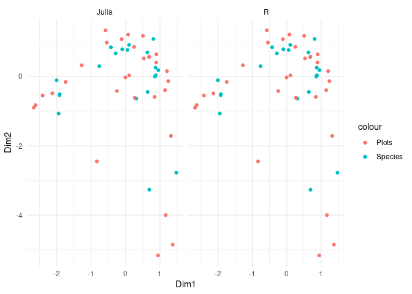

Correspondence Analysis
Outline
This page details how to perform correspondence analysis in Julia following the computational algorithm outlined in appendix A of Greenacre (2017) and implemented in the R package ca (Nenadic and Greenacre 2007).
The Julia package MultivariateStats.jl does not currently contain an implementation of correspondence analysis.
Import Required Packages
Julia
using Pkg; Pkg.activate("docs")
using EcoVeg
using NamedArrays
using LinearAlgebra
using CSV
using BenchmarkTools
using DataFrames
# using PlotsR
library(ca)
library(microbenchmark)
library(ggplot2)
library(dplyr)Attaching package: 'dplyr'
The following objects are masked from 'package:stats':
filter, lag
The following objects are masked from 'package:base':
intersect, setdiff, setequal, unionlibrary(JuliaCall)Create example data
Create example data in the form of a site by species named matrix, N.
<details class="code-fold"> <summary>Code</summary>
N = generate_test_array(rown = 20, coln = 30, meancoloccs = 10, rowprefix = "SiteA-", colprefix = "Species")</details>
20×30 Named Matrix{Float64}
Releve ╲ Species │ Species1 Species2 … Species29 Species30
─────────────────┼──────────────────────────────────────────────────────
SiteA-1 │ 0.0 0.0 … 0.186548 0.153906
SiteA-2 │ 0.11343 0.00833432 0.0 0.0
SiteA-3 │ 0.0 0.200758 0.0 0.0995619
SiteA-4 │ 0.0 0.00252327 0.0 0.0
SiteA-5 │ 0.188701 0.145787 0.0148086 0.0188119
SiteA-6 │ 0.194616 0.0 0.0 0.0
SiteA-7 │ 0.0798974 0.0 0.0365389 0.0225469
SiteA-8 │ 0.116016 0.0950804 0.0428558 0.0
⋮ ⋮ ⋮ ⋱ ⋮ ⋮
SiteA-13 │ 0.287794 0.0 0.0 0.0
SiteA-14 │ 0.213155 0.0 0.0 0.0
SiteA-15 │ 0.0 0.0239814 0.0424243 0.0491879
SiteA-16 │ 0.0 0.0 0.0 0.0
SiteA-17 │ 0.0228423 0.0 0.0 0.178242
SiteA-18 │ 0.0 0.0 0.0 0.0787833
SiteA-19 │ 0.0 0.0 0.0 0.0425844
SiteA-20 │ 0.0 0.0 … 0.257947 0.0A.1 Create the correspondence matrix
Calculate the correspondence matrix P following ?@eq-p.
\[P = \frac{1}{n}N\]
begin
n = sum(N)
P = N / n
end20×30 Named Matrix{Float64}
Releve ╲ Species │ Species1 Species2 … Species29 Species30
─────────────────┼──────────────────────────────────────────────────────
SiteA-1 │ 0.0 0.0 … 0.00932742 0.00769528
SiteA-2 │ 0.0056715 0.000416716 0.0 0.0
SiteA-3 │ 0.0 0.0100379 0.0 0.00497809
SiteA-4 │ 0.0 0.000126164 0.0 0.0
SiteA-5 │ 0.00943503 0.00728933 0.000740429 0.000940594
SiteA-6 │ 0.00973081 0.0 0.0 0.0
SiteA-7 │ 0.00399487 0.0 0.00182695 0.00112734
SiteA-8 │ 0.00580081 0.00475402 0.00214279 0.0
⋮ ⋮ ⋮ ⋱ ⋮ ⋮
SiteA-13 │ 0.0143897 0.0 0.0 0.0
SiteA-14 │ 0.0106578 0.0 0.0 0.0
SiteA-15 │ 0.0 0.00119907 0.00212122 0.00245939
SiteA-16 │ 0.0 0.0 0.0 0.0
SiteA-17 │ 0.00114211 0.0 0.0 0.0089121
SiteA-18 │ 0.0 0.0 0.0 0.00393917
SiteA-19 │ 0.0 0.0 0.0 0.00212922
SiteA-20 │ 0.0 0.0 … 0.0128974 0.0A.2 Calculate column and row masses
Calculate the row and and column masses using ?@eq-row_masses and ?@eq-column_masses respectively.
\[r = P1 \space \space r_{i} = \sum^{J}_{j = 1} P_{ij}\]
\[c = P^{t}1 \space \space c_{j} = \sum^{I}_{i = 1} P_{ij}\]
r = vec(sum(P, dims = 2))20-element Vector{Float64}:
0.049999999999999996
0.049999999999999996
0.05000000000000001
0.049999999999999996
0.049999999999999996
0.05
0.05
0.04999999999999999
0.05
0.04999999999999999
0.05000000000000001
0.05000000000000001
0.05000000000000001
0.05
0.05000000000000001
0.049999999999999996
0.049999999999999996
0.05
0.05
0.04999999999999999c = vec(sum(P, dims = 1))30-element Vector{Float64}:
0.06082260678749931
0.04483265773926613
0.02607349814770052
0.026260435957972658
0.05303642695843871
0.02153995152805076
0.05354035392597219
0.035399216098435424
0.02841305274605174
0.02815184944596347
⋮
0.025515630795600045
0.021608502674024845
0.01609260219597906
0.012611769154119717
0.02610119121097
0.030525967696712536
0.035905910448030945
0.03583852338673151
0.035753759911971834A.3 Diagonal matrices of row and column masses
Dr = Diagonal(r)20×20 Diagonal{Float64, Vector{Float64}}:
0.05 ⋅ ⋅ ⋅ ⋅ ⋅ … ⋅ ⋅ ⋅ ⋅ ⋅ ⋅
⋅ 0.05 ⋅ ⋅ ⋅ ⋅ ⋅ ⋅ ⋅ ⋅ ⋅ ⋅
⋅ ⋅ 0.05 ⋅ ⋅ ⋅ ⋅ ⋅ ⋅ ⋅ ⋅ ⋅
⋅ ⋅ ⋅ 0.05 ⋅ ⋅ ⋅ ⋅ ⋅ ⋅ ⋅ ⋅
⋅ ⋅ ⋅ ⋅ 0.05 ⋅ ⋅ ⋅ ⋅ ⋅ ⋅ ⋅
⋅ ⋅ ⋅ ⋅ ⋅ 0.05 … ⋅ ⋅ ⋅ ⋅ ⋅ ⋅
⋅ ⋅ ⋅ ⋅ ⋅ ⋅ ⋅ ⋅ ⋅ ⋅ ⋅ ⋅
⋅ ⋅ ⋅ ⋅ ⋅ ⋅ ⋅ ⋅ ⋅ ⋅ ⋅ ⋅
⋅ ⋅ ⋅ ⋅ ⋅ ⋅ ⋅ ⋅ ⋅ ⋅ ⋅ ⋅
⋅ ⋅ ⋅ ⋅ ⋅ ⋅ ⋅ ⋅ ⋅ ⋅ ⋅ ⋅
⋅ ⋅ ⋅ ⋅ ⋅ ⋅ … ⋅ ⋅ ⋅ ⋅ ⋅ ⋅
⋅ ⋅ ⋅ ⋅ ⋅ ⋅ ⋅ ⋅ ⋅ ⋅ ⋅ ⋅
⋅ ⋅ ⋅ ⋅ ⋅ ⋅ ⋅ ⋅ ⋅ ⋅ ⋅ ⋅
⋅ ⋅ ⋅ ⋅ ⋅ ⋅ ⋅ ⋅ ⋅ ⋅ ⋅ ⋅
⋅ ⋅ ⋅ ⋅ ⋅ ⋅ 0.05 ⋅ ⋅ ⋅ ⋅ ⋅
⋅ ⋅ ⋅ ⋅ ⋅ ⋅ … ⋅ 0.05 ⋅ ⋅ ⋅ ⋅
⋅ ⋅ ⋅ ⋅ ⋅ ⋅ ⋅ ⋅ 0.05 ⋅ ⋅ ⋅
⋅ ⋅ ⋅ ⋅ ⋅ ⋅ ⋅ ⋅ ⋅ 0.05 ⋅ ⋅
⋅ ⋅ ⋅ ⋅ ⋅ ⋅ ⋅ ⋅ ⋅ ⋅ 0.05 ⋅
⋅ ⋅ ⋅ ⋅ ⋅ ⋅ ⋅ ⋅ ⋅ ⋅ ⋅ 0.05Dc = Diagonal(c)30×30 Diagonal{Float64, Vector{Float64}}:
0.0608226 ⋅ ⋅ … ⋅ ⋅ ⋅
⋅ 0.0448327 ⋅ ⋅ ⋅ ⋅
⋅ ⋅ 0.0260735 ⋅ ⋅ ⋅
⋅ ⋅ ⋅ ⋅ ⋅ ⋅
⋅ ⋅ ⋅ ⋅ ⋅ ⋅
⋅ ⋅ ⋅ … ⋅ ⋅ ⋅
⋅ ⋅ ⋅ ⋅ ⋅ ⋅
⋅ ⋅ ⋅ ⋅ ⋅ ⋅
⋅ ⋅ ⋅ ⋅ ⋅ ⋅
⋅ ⋅ ⋅ ⋅ ⋅ ⋅
⋮ ⋱
⋅ ⋅ ⋅ ⋅ ⋅ ⋅
⋅ ⋅ ⋅ ⋅ ⋅ ⋅
⋅ ⋅ ⋅ ⋅ ⋅ ⋅
⋅ ⋅ ⋅ ⋅ ⋅ ⋅
⋅ ⋅ ⋅ … ⋅ ⋅ ⋅
⋅ ⋅ ⋅ ⋅ ⋅ ⋅
⋅ ⋅ ⋅ 0.0359059 ⋅ ⋅
⋅ ⋅ ⋅ ⋅ 0.0358385 ⋅
⋅ ⋅ ⋅ ⋅ ⋅ 0.0357538A.4 Calculate the matrix of standardized residuals
\[SR = D_{r}^{-\frac{1}{2}}(P - rc^{T})D_{c}^{-\frac{1}{2}}\]
SR = Dr^(-1/2) * (P - r * transpose(c)) * Dc^(-1/2)20×30 Named Matrix{Float64}
Releve ╲ Species │ Species1 Species2 … Species29 Species30
─────────────────┼──────────────────────────────────────────────────────
SiteA-1 │ -0.0551464 -0.0473459 … 0.178013 0.139722
SiteA-2 │ 0.047698 -0.0385444 -0.0423311 -0.0422811
SiteA-3 │ -0.0551464 0.164667 -0.0423311 0.0754571
SiteA-4 │ -0.0551464 -0.0446812 -0.0423311 -0.0422811
SiteA-5 │ 0.115944 0.106613 -0.0248398 -0.0200348
SiteA-6 │ 0.121308 -0.0473459 -0.0423311 -0.0422811
SiteA-7 │ 0.0172947 -0.0473459 0.00082729 -0.0156179
SiteA-8 │ 0.0500427 0.0530645 0.00828854 -0.0422811
⋮ ⋮ ⋮ ⋱ ⋮ ⋮
SiteA-13 │ 0.20579 -0.0473459 -0.0423311 -0.0422811
SiteA-14 │ 0.138116 -0.0473459 -0.0423311 -0.0422811
SiteA-15 │ -0.0551464 -0.0220201 0.0077789 0.0158867
SiteA-16 │ -0.0551464 -0.0473459 -0.0423311 -0.0422811
SiteA-17 │ -0.0344359 -0.0473459 -0.0423311 0.168501
SiteA-18 │ -0.0551464 -0.0473459 -0.0423311 0.0508852
SiteA-19 │ -0.0551464 -0.0473459 -0.0423311 0.00807764
SiteA-20 │ -0.0551464 -0.0473459 … 0.262347 -0.0422811A.5 Calculate the Singular Value Decomposition (SVD) of S
begin
svd = LinearAlgebra.svd(SR)
U = svd.U
S = svd.S
V = svd.V
Vt = svd.Vt
end20×30 Matrix{Float64}:
-0.152356 -0.230789 … -0.0778834 0.427768 -0.106422
-0.089513 0.453986 -0.106339 0.181316 0.146044
-0.107908 -0.205713 0.330808 0.0999212 0.131386
-0.205106 -0.0196264 -0.117497 0.100905 0.149567
0.489186 -0.21209 -0.017494 0.222331 0.036193
0.330702 -0.000463138 … -0.137208 -0.144381 -0.276211
0.136883 0.0738212 -0.19089 -8.12313e-5 -0.0571705
-0.0170049 0.0131791 0.039857 0.00709588 0.145381
0.0513213 -0.0138951 -0.268351 0.0345177 -0.0240562
0.21409 -0.118841 -0.0462043 -0.0622539 -0.0514247
-0.148838 0.0839695 … -0.139071 -0.0490751 0.252321
-0.0221496 0.0880529 0.0281021 0.190931 0.108824
0.0700826 0.143186 -0.203515 0.0136399 -0.18206
-0.165405 -0.236716 -0.053944 0.0338325 0.242225
-0.083457 0.247925 0.190246 0.0309885 -0.40908
0.0394629 0.354352 … -0.234155 0.294959 0.0737728
-0.219262 0.03865 -0.184914 0.127684 -0.0987762
-0.00585751 0.218367 -0.0676968 -0.265298 -0.259423
0.139489 0.13587 0.0675268 -0.0102798 0.0789668
0.0702678 -0.198274 0.0735289 -0.203812 -0.263844A.6 Standard coordinates Φ of rows
\[\Phi = D_{r}^{-\frac{1}{2}} U\]
Φ = Dr^(-1/2) * U20×20 Matrix{Float64}:
0.44219 0.0495691 1.10813 … -0.859516 0.612602 1.0
-0.390224 -0.327104 0.438832 1.72714 -0.411897 1.0
-0.616686 0.78878 -1.69628 0.595383 -0.795241 1.0
0.691795 -1.13968 0.549625 -0.0468164 -0.342647 1.0
-1.06385 0.591425 -0.259671 1.86812 1.33382 1.0
-0.614554 -0.608303 1.21079 … 0.595378 -1.27037 1.0
0.255189 0.0601392 -0.156019 1.13886 0.211987 1.0
0.404874 0.600688 -0.499354 0.132464 -0.0536525 1.0
-0.582032 0.810706 0.621235 -0.927252 -0.675101 1.0
-0.216212 -0.992287 -0.0898151 -0.119212 1.16068 1.0
1.16174 -0.283438 0.702967 … 0.212057 -2.49645 1.0
-1.32707 2.62177 -0.438315 -0.710841 0.35841 1.0
-0.543187 -0.845068 -1.38763 -1.8755 -0.0317273 1.0
-0.2568 -0.358232 -0.482023 -1.02006 0.680258 1.0
0.654223 -0.35351 -1.00515 0.865976 0.511164 1.0
-0.109901 -1.63821 -1.24331 … -1.36705 -0.162466 1.0
-1.10704 0.879044 1.30449 -0.746436 -1.23807 1.0
-0.314524 -0.68476 2.28879 -0.23355 2.08429 1.0
0.154315 -0.821351 -0.925496 1.17687 -0.146942 1.0
3.37775 1.64982 -0.041792 -0.406014 0.671341 1.0# NamedArrays.setnames!(NamedArray(Φ), names = vec(names(N)[1]))
# NamedArray(Φ, names(N)[1])A.7 Standard coordinates Γ of columns
\[\Gamma = D_{c}^{-\frac{1}{2}} V\]
Γ = Dc^(-1/2) * V30×20 Matrix{Float64}:
-0.61777 -0.362956 -0.437543 … -0.0237509 0.565597 0.284921
-1.08998 2.1441 -0.971551 1.03131 0.641692 -0.936417
-0.211649 -0.684772 1.41075 0.858979 0.148707 -1.93744
0.558451 -1.17961 0.320281 -0.117803 -0.21802 0.404151
-0.0403493 -0.497579 0.103579 -0.244584 1.52073 -1.05498
-1.03092 1.48961 -0.174439 … -0.666834 -1.66625 -1.56372
2.92839 1.17457 -0.127907 0.0315002 0.0347382 0.265748
-1.0324 0.275608 2.03418 -0.0671468 -0.248785 -0.290812
-0.469983 -0.172404 -1.12079 -1.73995 0.0412962 -0.457015
0.438785 -0.534232 0.536193 0.666933 -0.914645 -1.23708
⋮ ⋱
0.15874 -1.16732 -1.76303 -0.39014 1.60706 1.06085
-0.129648 -0.724343 -1.68213 2.09997 -0.651449 -0.188241
0.259824 0.975321 0.214099 0.616308 -1.71158 -0.847688
-0.606429 0.564812 -1.9318 -0.438286 -1.7855 2.56243
-0.630186 1.59698 -0.173781 … 0.30495 -0.0941083 1.71721
0.0476108 -1.01127 1.24944 -0.709888 1.94965 -0.199161
-0.411019 -0.561192 1.74579 -0.357261 0.356364 0.388039
2.25961 0.957768 0.527816 -1.40139 -0.0543012 -1.0766
-0.562821 0.772367 0.694844 -1.37198 0.417622 -1.39536A.8 Principal coordinates F of rows
\[F = D_{r}^{-\frac{1}{2}} U D_{\alpha} = \Phi D_{\alpha}\]
F = Φ * Diagonal(S)20×20 Matrix{Float64}:
0.313983 0.0301868 0.637677 0.628747 … 0.067704 7.04196e-17
-0.277084 -0.199201 0.252527 1.00748 -0.0455224 7.04196e-17
-0.437886 0.480355 -0.976129 0.0672319 -0.087889 7.04196e-17
0.491219 -0.694049 0.316283 -0.606962 -0.0378689 7.04196e-17
-0.755399 0.360169 -0.149428 -0.37958 0.147412 7.04196e-17
-0.436373 -0.370447 0.696751 -0.709544 … -0.140399 7.04196e-17
0.181201 0.0366238 -0.0897811 0.328552 0.0234286 7.04196e-17
0.287487 0.36581 -0.287354 -1.0512 -0.00592961 7.04196e-17
-0.41328 0.493707 0.357491 -0.16188 -0.0746113 7.04196e-17
-0.153525 -0.604287 -0.0516842 -0.847598 0.128277 7.04196e-17
0.824911 -0.17261 0.404524 0.247375 … -0.275905 7.04196e-17
-0.942307 1.59662 -0.252229 0.404363 0.039611 7.04196e-17
-0.385698 -0.514633 -0.798517 -0.250867 -0.00350646 7.04196e-17
-0.182344 -0.218158 -0.277381 -0.139187 0.0751813 7.04196e-17
0.46454 -0.215282 -0.578417 0.380764 0.0564932 7.04196e-17
-0.0780364 -0.997646 -0.715464 0.924959 … -0.0179555 7.04196e-17
-0.786069 0.535324 0.750671 -0.0625039 -0.13683 7.04196e-17
-0.223332 -0.417008 1.31709 0.33747 0.230354 7.04196e-17
0.109574 -0.50019 -0.532578 -0.0511589 -0.0162398 7.04196e-17
2.39842 1.00472 -0.0240493 -0.0664642 0.0741958 7.04196e-17A.9 Principal coordinates G of columns
\[G = D_{c}^{-\frac{1}{2}} V D_{\alpha} = \Gamma D_{\alpha}\]
G = Γ * Diagonal(S)30×20 Matrix{Float64}:
-0.438656 -0.221035 -0.251785 -0.448665 … 0.0625091 2.0064e-17
-0.773954 1.30572 -0.559081 -0.0500056 0.070919 -6.59421e-17
-0.150284 -0.417015 0.81182 0.944873 0.0164349 -1.36434e-16
0.396536 -0.718367 0.184306 -1.24509 -0.0240953 2.84602e-17
-0.0286506 -0.303018 0.0596049 -0.574153 0.168069 -7.42911e-17
-0.732016 0.907152 -0.100381 -0.0437373 … -0.184151 -1.10117e-16
2.07934 0.715295 -0.0736045 -0.122574 0.00383922 1.87138e-17
-0.733069 0.167841 1.17057 -0.29962 -0.0274954 -2.04788e-17
-0.333718 -0.104991 -0.644962 -0.14537 0.00456401 -3.21828e-17
0.311565 -0.325339 0.308553 0.33385 -0.101085 -8.71146e-17
⋮ ⋱
0.112716 -0.710881 -1.01454 0.607523 0.177611 7.47049e-17
-0.0920586 -0.441114 -0.967987 0.315316 -0.0719973 -1.32558e-17
0.184492 0.593955 0.123204 0.224241 -0.189161 -5.96938e-17
-0.430604 0.343962 -1.11165 0.0486581 -0.197331 1.80446e-16
-0.447473 0.972537 -0.100003 0.523461 … -0.0104007 1.20925e-16
0.0338068 -0.615847 0.718993 -0.365979 0.215473 -1.40248e-17
-0.29185 -0.341757 1.00462 -0.334518 0.0393848 2.73255e-17
1.60447 0.583266 0.303733 0.28755 -0.0060013 -7.5814e-17
-0.399639 0.470359 0.399849 0.426726 0.0461551 -9.82606e-17A.10 Principal inertias λ<sub>k</sub>
\[\lambda_{k} = \alpha_{k}^{2}, k = 1,2,...,\space where \space k = min\{I-1,J-1\}\]
F * Dr * transpose(F)20×20 Matrix{Float64}:
0.17801 0.0232344 -0.020169 … -0.00944917 0.017134
0.0232344 0.127046 -0.0300099 -0.0346221 -0.0455819
-0.020169 -0.0300099 0.168892 -0.0148043 -0.0300945
-0.0251627 -0.0188838 -0.0358665 -0.0123541 0.00565727
-0.0356062 -0.0142279 0.0159625 -0.0295658 -0.0446708
0.0270001 -0.0278797 -0.0356796 … -0.0170841 -0.05
0.0180513 0.00659217 -0.0145211 -0.00490408 0.00871824
-0.015381 -0.0337113 -0.00229373 -0.00781989 0.0271672
-0.0371895 0.0109165 -0.00184766 -0.0169564 -0.0249078
-0.0206019 -0.0391152 -0.00239401 0.0228191 -0.05
0.00862043 0.00206892 -0.0417113 … -0.00244925 0.0794781
-0.0173279 0.010431 0.0448393 -0.0139399 -0.05
-0.05 0.0108999 0.00537064 0.0267206 -0.05
-0.0147844 0.00489931 0.0139413 -0.0158473 -0.0401501
-0.0137662 -0.00718186 0.0176237 -0.0120293 0.0370109
-0.00896108 0.0363671 0.00912409 … 0.0347709 -0.05
0.00126723 -0.00911677 -0.00836463 -0.0299987 -0.05
-0.00491824 0.0278748 -0.0379974 -0.0147902 -0.0487024
-0.00944917 -0.0346221 -0.0148043 0.161444 -0.00914041
0.017134 -0.0455819 -0.0300945 -0.00914041 0.368082G * Dr * transpose(G)30×30 Matrix{Float64}:
0.108793 -0.0137986 -0.0240881 … -0.0377446 -0.0391675
-0.0137986 0.168332 -0.0256119 -0.0387178 0.0206733
-0.0240881 -0.0256119 0.173714 -0.0242308 -0.0181693
-0.0343068 -0.0314029 -0.0361752 -0.0209477 -0.05
0.0247254 -0.0315456 -0.0460937 0.000879204 -0.00759399
-0.0246769 0.0873623 -0.0210777 … -0.0438835 0.0518524
-0.0418416 -0.0388467 -0.0282765 0.176855 -0.038585
0.0120863 -0.000401904 0.0393871 -0.0475393 0.0400899
0.0507364 0.00928747 -0.0175544 -0.0361267 -0.0231986
0.00736099 -0.047855 0.0352748 0.0170781 -0.0185366
⋮ ⋱
-0.05 -0.00987801 -0.00464663 -0.025085 -0.00525598
0.0295348 -0.0143894 -0.00908552 -0.0354307 -0.00366396
-0.025497 0.0281583 0.0491926 0.01174 -0.024094
0.0116017 0.0825911 -0.05 -0.0353601 0.0445598
-0.0330266 0.0788964 -0.0441313 … -0.00772838 0.0477582
-0.0334052 -0.0267816 0.0496628 -0.05 -0.0127557
-0.0153519 -0.0443865 0.0400278 -0.0232527 0.0189707
-0.0377446 -0.0387178 -0.0242308 0.193164 0.0122385
-0.0391675 0.0206733 -0.0181693 0.0122385 0.109929Create Correspondence Analysis Function
function correspondence_analysis(N::NamedMatrix)
# A.1 Create the correspondence matrix
P = N / sum(N)
# A.2 Calculate column and row masses
r = vec(sum(P, dims = 2))
c = vec(sum(P, dims = 1))
# A.3 Diagonal matrices of row and column masses
Dr = Diagonal(r)
Dc = Diagonal(c)
# A.4 Calculate the matrix of standardized residuals
SR = Dr^(-1/2) * (P - r * transpose(c)) * Dc^(-1/2)
# A.5 Calculate the Singular Value Decomposition (SVD) of S
svd = LinearAlgebra.svd(SR)
U = svd.U
V = svd.V
S = svd.S
D = Diagonal(S)
# A.6 Standard coordinates Φ of rows
Φ_rownames = names(N)[1]
Φ_colnames = vec(["Dim"].*string.([1:1:size(N,1);]))
Φ = NamedArray(Dr^(-1/2) * U, names = (Φ_rownames, Φ_colnames), dimnames = ("Plot", "Dimension"))[1:end,1:end .!= end]
# A.7 Standard coordinates Γ of columns
Γ_rownames = names(N)[2]
Γ_colnames = vec(["Dim"].*string.([1:1:size(N,1);]))
Γ = NamedArray(Dc^(-1/2) * V, names = (Γ_rownames, Γ_colnames), dimnames = ("Species", "Dimension"))[1:end,1:end .!= end]
# A.8 Principal coordinates F of rows
# F = Φ * D
F = Dr^(-1/2) * U * D
F = F[1:end,1:end .!= end]
# A.9 Principal coordinates G of columns
# G = Γ * D
G = Dc^(-1/2) * V * D
G = G[1:end,1:end .!= end]
# [1:end, 1:end .∉ [[20]]]
results = (sv = D, # Singular values
rownames = names(N)[1], # Row names
rowmass = r, # Row masses
# rowdist = , # Row chi-square distances to centroid
# rowinertia = , # Row inertias
rowcoord = Φ, # Row standard coordinates
# rowsup = , # Indicies of row supplementary points
colnames = names(N)[2], # Column names
colmass = c, # Column masses
# coldist = , # Column chi-square distances to centroid
# colinertia = , # Column inertias
colcoord = Γ, # Column standard coordinates
# colsup = , # Indices of column supplementary points
N = N # The frequency table
)
return results
endcorrespondence_analysis (generic function with 1 method)Test Function
ca_results = correspondence_analysis(N)(sv = [0.710064350770004 0.0 … 0.0 0.0; 0.0 0.6089845646199968 … 0.0 0.0; … ; 0.0 0.0 … 0.11051871901724866 0.0; 0.0 0.0 … 0.0 7.041959733235249e-17], rownames = ["SiteA-1", "SiteA-2", "SiteA-3", "SiteA-4", "SiteA-5", "SiteA-6", "SiteA-7", "SiteA-8", "SiteA-9", "SiteA-10", "SiteA-11", "SiteA-12", "SiteA-13", "SiteA-14", "SiteA-15", "SiteA-16", "SiteA-17", "SiteA-18", "SiteA-19", "SiteA-20"], rowmass = [0.049999999999999996, 0.049999999999999996, 0.05000000000000001, 0.049999999999999996, 0.049999999999999996, 0.05, 0.05, 0.04999999999999999, 0.05, 0.04999999999999999, 0.05000000000000001, 0.05000000000000001, 0.05000000000000001, 0.05, 0.05000000000000001, 0.049999999999999996, 0.049999999999999996, 0.05, 0.05, 0.04999999999999999], rowcoord = [0.4421897926018126 0.0495690516620504 … -0.8595164099402813 0.6126018620134638; -0.39022439487888255 -0.32710390620419005 … 1.7271396109501118 -0.41189749677867504; … ; 0.15431527021784 -0.8213505098969821 … 1.1768725220495007 -0.1469420316055419; 3.3777496568292396 1.6498228571576217 … -0.4060136940795923 0.6713414895806895], colnames = ["Species1", "Species2", "Species3", "Species4", "Species5", "Species6", "Species7", "Species8", "Species9", "Species10" … "Species21", "Species22", "Species23", "Species24", "Species25", "Species26", "Species27", "Species28", "Species29", "Species30"], colmass = [0.06082260678749931, 0.04483265773926613, 0.02607349814770052, 0.026260435957972658, 0.05303642695843871, 0.02153995152805076, 0.05354035392597219, 0.035399216098435424, 0.02841305274605174, 0.02815184944596347 … 0.07085229764197494, 0.025515630795600045, 0.021608502674024845, 0.01609260219597906, 0.012611769154119717, 0.02610119121097, 0.030525967696712536, 0.035905910448030945, 0.03583852338673151, 0.035753759911971834], colcoord = [-0.6177697653123918 -0.3629558489463359 … -0.023750904851063837 0.5655969630767088; -1.0899769297105102 2.1441006652807912 … 1.0313110625854809 0.6416922842134858; … ; 2.259607712900967 0.9577681503643262 … -1.401389918901712 -0.05430119967976556; -0.5628214094461231 0.77236665576396 … -1.3719819917698466 0.41762220433852915], N = [0.0 0.0 … 0.18654841706607678 0.1539055282773695; 0.11343006435861283 0.008334320900419162 … 0.0 0.0; … ; 0.0 0.0 … 0.0 0.04258438439948281; 0.0 0.0 … 0.2579472868466793 0.0])Plot Test Results
begin
plots_x = ca_results.rowcoord[:,"Dim1"]
plots_y = ca_results.rowcoord[:,"Dim2"]
species_x = ca_results.colcoord[:,"Dim1"]
species_y = ca_results.colcoord[:,"Dim2"]
# scatter(species_x, species_y, series_annotations = text.(ca_results.colnames, 8, :right, :bottom), framestyle=:origin, label = "Species")
# scatter!(plots_x, plots_y, series_annotations = text.(ca_results.rownames, 8, :right, :bottom), label = "Plots")
end30-element Named Vector{Float64}
Species │
──────────┼──────────
Species1 │ -0.362956
Species2 │ 2.1441
Species3 │ -0.684772
Species4 │ -1.17961
Species5 │ -0.497579
Species6 │ 1.48961
Species7 │ 1.17457
Species8 │ 0.275608
⋮ ⋮
Species23 │ -0.724343
Species24 │ 0.975321
Species25 │ 0.564812
Species26 │ 1.59698
Species27 │ -1.01127
Species28 │ -0.561192
Species29 │ 0.957768
Species30 │ 0.772367R vs Julia Dune Data
Let’s see how the R function ca::ca() compares to the Julia function correspondence_analysis() defined above.
First load the dune dataset bundled in {vegan}.
Julia
begin
dune_df = CSV.read("../data/dune.csv", DataFrame, header = 1)
dune_na = NamedArray(Array(dune_df))
NamedArrays.setnames!(dune_na, names(dune_df), 2)
end(OrderedCollections.OrderedDict{Any, Int64}("1" => 1, "2" => 2, "3" => 3, "4" => 4, "5" => 5, "6" => 6, "7" => 7, "8" => 8, "9" => 9, "10" => 10…), OrderedCollections.OrderedDict{Any, Int64}("Achimill" => 1, "Agrostol" => 2, "Airaprae" => 3, "Alopgeni" => 4, "Anthodor" => 5, "Bellpere" => 6, "Bromhord" => 7, "Chenalbu" => 8, "Cirsarve" => 9, "Comapalu" => 10…))R
dune <- as.matrix(read.csv(file = "../data/dune.csv"))Run CA in Julia on Dune data
dune_ca_julia = correspondence_analysis(dune_na)(sv = [0.7321237072731497 0.0 … 0.0 0.0; 0.0 0.6325690627910964 … 0.0 0.0; … ; 0.0 0.0 … 0.05896537573383853 0.0; 0.0 0.0 … 0.0 7.091790502929597e-17], rownames = ["1", "2", "3", "4", "5", "6", "7", "8", "9", "10", "11", "12", "13", "14", "15", "16", "17", "18", "19", "20"], rowmass = [0.02627737226277372, 0.06131386861313868, 0.05839416058394161, 0.0656934306569343, 0.06277372262773723, 0.07007299270072993, 0.05839416058394161, 0.05839416058394161, 0.06131386861313869, 0.06277372262773723, 0.04671532846715329, 0.051094890510948905, 0.04817518248175183, 0.03503649635036496, 0.03357664233576642, 0.04817518248175183, 0.0218978102189781, 0.03941605839416058, 0.04525547445255475, 0.04525547445255475], rowcoord = [0.8116737226994164 1.0826713631197626 … -0.6147556146809311 2.417299499470586; 0.6326772260449806 0.6958357017624843 … -2.254788610965971 -0.049159624022002205; … ; 0.6902687683328907 -3.2642026272615623 … 0.6415235852706883 0.014843350243563693; -1.9443804612344018 -1.0688808878703615 … -0.7236470546331122 -1.087127732821526], colnames = ["Achimill", "Agrostol", "Airaprae", "Alopgeni", "Anthodor", "Bellpere", "Bromhord", "Chenalbu", "Cirsarve", "Comapalu" … "Ranuflam", "Rumeacet", "Sagiproc", "Salirepe", "Scorautu", "Trifprat", "Trifrepe", "Vicilath", "Bracruta", "Callcusp"], colmass = [0.02335766423357664, 0.07007299270072993, 0.0072992700729927005, 0.05255474452554745, 0.030656934306569343, 0.01897810218978102, 0.021897810218978103, 0.00145985401459854, 0.00291970802919708, 0.00583941605839416 … 0.020437956204379562, 0.026277372262773723, 0.029197080291970802, 0.016058394160583942, 0.07883211678832117, 0.01313868613138686, 0.06861313868613139, 0.00583941605839416, 0.07153284671532847, 0.014598540145985401], colcoord = [1.2410388912758308 -0.13374974813501736 … -2.6279716856907323 1.0922556626083908; -1.275443784762892 0.3264688587581394 … 0.25940753883575823 -1.3054088243241777; … ; -0.2488978439865396 -0.4185696756019523 … -0.7717763834464734 -0.01770675187655213; -2.6661966956330643 -0.8970175654454415 … 0.19242465810027473 -0.22298366681774884], N = [1 0 … 0 0; 3 0 … 0 0; … ; 0 0 … 3 0; 0 5 … 4 3])Run CA in R using Dune data
dune_ca_r <- ca::ca(dune)dune_ca_coords_r <- ca::cacoord(dune_ca_r)
dune_ca_r_rowcoord <- dune_ca_coords_r$rows
dune_ca_r_colcoord <- dune_ca_coords_r$columnsCheck equality of R and Julia CA results
Check whether the standard row (plot) and column (species) coordinates produced by the Julia function correspondence_analaysis() the R function ca::ca() are identical.
First retrieve the Julia results in R.
dune_ca_julia <- JuliaCall::julia_eval("dune_ca_julia")
dune_ca_julia_rowcoord <- dune_ca_julia$rowcoord
dune_ca_julia_colcoord <- dune_ca_julia$colcoordThen check for equivalence. Note that the row and column names are stripped from the Julia results when calling JuliaCall::julia_eval("dune_ca_julia"), so the R results are also unnamed.
The R function all.equal is used rather than identical as the Julia implementation returns results with higher precision.
plots_allequal <- all.equal(dune_ca_julia_rowcoord, unname(dune_ca_r_rowcoord))
species_allequal <- all.equal(dune_ca_julia_colcoord, unname(dune_ca_r_colcoord))
isTRUE(all(plots_allequal, species_allequal))[1] TRUELet’s view the first two dimensions of the Julia and R results side-by-side.
Visualise standard coordinates

Benchmark Functions
@benchmark correspondence_analysis(dune_na)BenchmarkTools.Trial: 10000 samples with 1 evaluation.
Range (min … max): 123.579 μs … 3.585 ms ┊ GC (min … max): 0.00% … 80.77%
Time (median): 129.913 μs ┊ GC (median): 0.00%
Time (mean ± σ): 146.360 μs ± 117.083 μs ┊ GC (mean ± σ): 3.35% ± 4.18%
▄█▇▅▃▂▂▂▁▁ ▁ ▁
███████████████▇██▇▇▇█▇▇▆▇▇▆▆▆▆▅▆▅▆▆█▇▅▅▄▄▅▅▄▄▄▃▅▄▃▄▄▄▃▅███▇▇ █
124 μs Histogram: log(frequency) by time 302 μs <
Memory estimate: 114.97 KiB, allocs estimate: 413.microbenchmark::microbenchmark(ca::ca(dune))Unit: microseconds
expr min lq mean median uq max neval
ca::ca(dune) 441.234 446.46 457.7667 448.9995 454.1255 691.635 100References
Greenacre, Michael. 2017. Correspondence Analysis in Practice, Third Edition. CRC Press.
Nenadic, Oleg, and Michael Greenacre. 2007. “Correspondence Analysis in R, with Two- and <span class="nocase">Three-dimensional Graphics</span>: The Ca Package.” Journal of Statistical Software 20 (February): 1–13. https://doi.org/10.18637/jss.v020.i03.